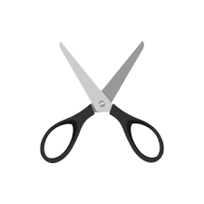
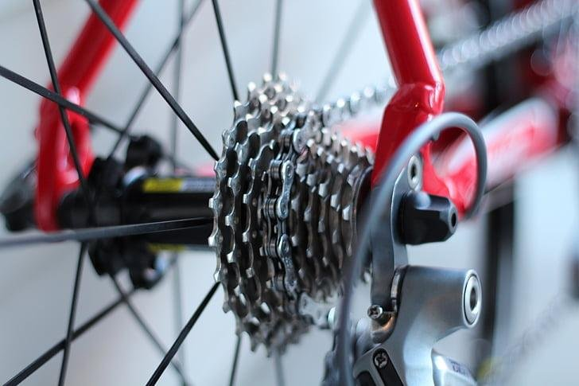
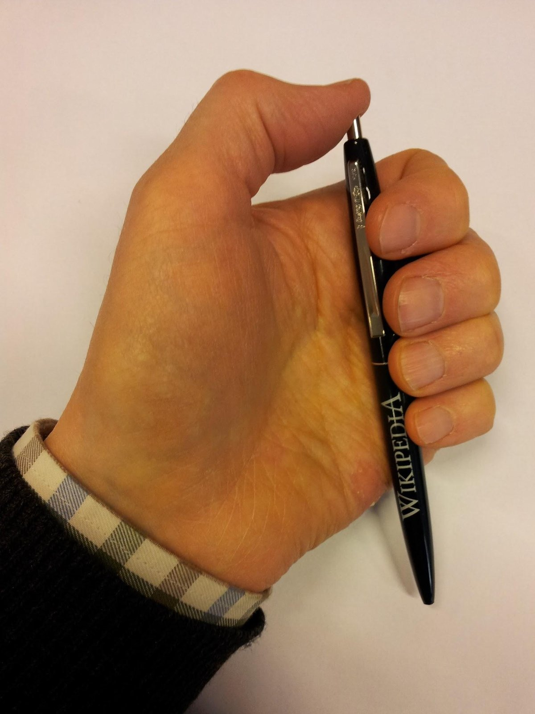
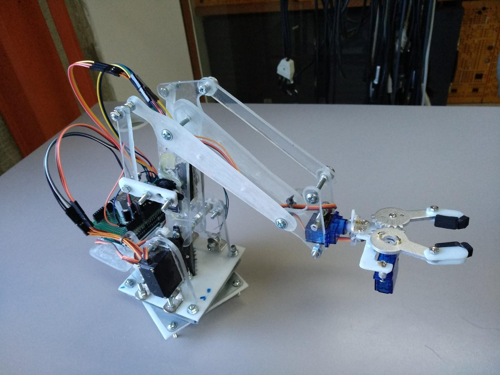
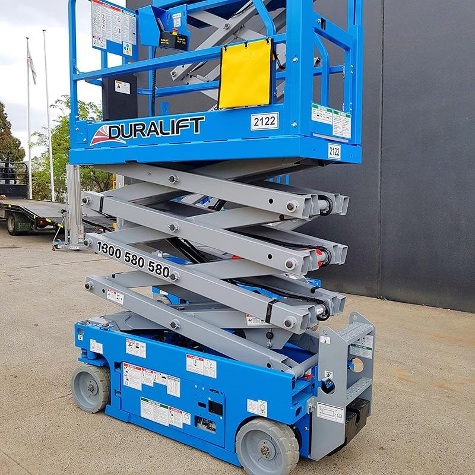
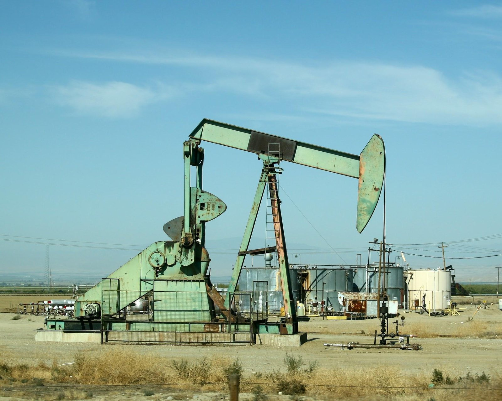

How connected parts turn a motor’s spin into useful motion.
We are going to start with a short video of an automated machine on a production line. As you watch, pay attention to every part that moves and how often it repeats.
Look for repeated motions: parts that are rotating, pushing, lifting, sliding, and so on.
Count how many motors you think are running the show.
What repeated motions did you see?
Look for parts that are rotating, pushing, lifting, sliding, and so on.
How many motors do you think are running the show?
Based on what you have seen, how would you describe a mechanical linkage?
Think of how scissors work, how bicycle chains work, how an umbrella opens and closes, and how the clicker on a pen holds the tip out and then retracts it. What do these all have in common?



They all transfer motion and force through connected parts.
Motors produce rotation.
Linkages convert that rotation into useful motion: linear, oscillating, or a complex path.
A lever is a rigid bar that pivots on a point.
Examples: scissors, seesaws, pliers, door handles, and staplers.
Gears are interlocking toothed wheels that pass rotation from one shaft to the next.
Examples: clocks, gearboxes, and pencil sharpeners.
A chain or belt transmits power between shafts that are a distance apart.
Examples: bike chains, conveyor belts, and car timing belts.
There are many more types of linkages, and real machines often combine several of them.

In robotics, linkages let us use a single motor to move multiple parts, like a robot arm or gripper.
In this gripper, one servo turns a pair of meshed gears, and both fingers open and close together.

A scissor lift stacks crossed bars that pivot at their centers and ends, so the whole stack acts as one linkage.
A short push at the bottom of the stack becomes a tall vertical lift of the platform on top.

A pumpjack uses a motor to spin a crank with heavy counterweights.
A connecting arm links the crank to a long rocking beam, which turns that rotation into the slow up-and-down stroke that pumps oil out of the well.
Let’s look at an example of a mechanical linkage that looks simple but can be used in many different ways.
In the next video, watch for how changing the length of each bar changes the path of the output.
Use the simulator to change the bar lengths and watch how the output motion changes.
Open the 4-bar linkage simulatorWith a partner, build a 4-bar linkage using 4 bars, 4 shafts, and collars. Adjust the lengths of the legs to create a useful form of motion.
Trace your design. Then put a pencil in two holes of the linkage to trace the input and output motion, and describe how that motion would be useful.
With your partner, design a linkage using the supplies you already have that makes motion change direction. Some input motion, like a push or a turn, needs to become a different output motion.
Trace your design. Then put a pencil in two holes of the linkage to trace the input and output motion, and describe how that motion would be useful.
Linkages are systems of connected parts designed to transmit motion and force from one location to another.
They turn a motor’s rotation into purposeful movement, which makes them essential for robots, vehicles, machines, and everything that moves.